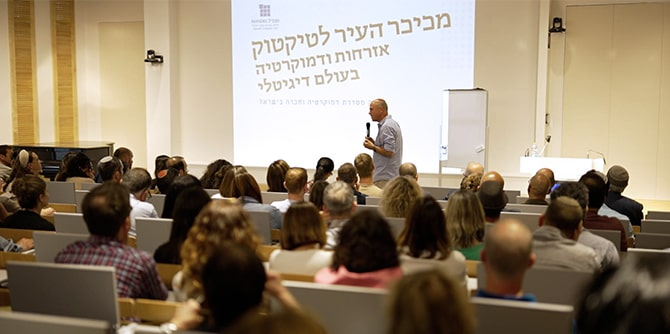
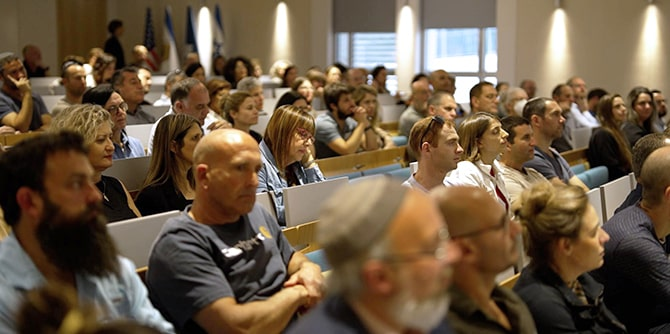
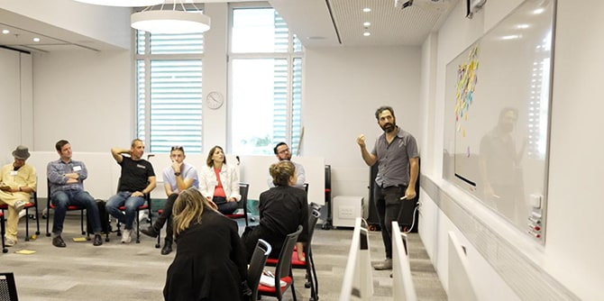
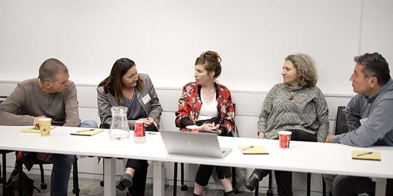

הרצאתו של ד"ר מיכה גודמן (צילום: מדיה גביש)
המחלוקת בישראל בנוגע לתפקידה של הרשות השופטת נסערת ולוהטת מאוד. החודשים האחרונים, אף שהם ממחישים שהדמוקרטיה הישראלית חיונית ותוססת, היו תקופה מאתגרת במיוחד עבור חלק ניכר מהציבור הישראלי, וגם עבור קהילת מנדל הרחבה. חברי הסגל, צוות העובדים, העמיתים והבוגרים של קרן מנדל-ישראל מייצגים מגוון רחב מאוד של השקפות בנושאים חשובים רבים, בהם גם הוויכוח הנוכחי. הצומת שבו נמצאת החברה הישראלית כעת מצריך הבנה מעמיקה בקרב קהילת מנדל של התהליכים שהובילו למצב הנוכחי, האפשרויות שהוא טומן בחובו וההשלכות השונות שעלולות להיות לו.

מאזינים להרצאתו של ד"ר מיכה גודמן (צילום: מדיה גביש)
לשם כך פיתחה יחידת בוגרות ובוגרי מנדל סדרה של הרצאות, שיחות וסדנאות תחת הכותרת "דמוקרטיה וחברה בישראל". הסדרה מספקת מבט מבפנים על מערכת המשפט בישראל; בוחנת שינויים בסדר החברתי-דמוקרטי המתרחשים במדינות שונות ברחבי העולם; חוקרת את השפעת הטכנולוגיה על מרקם היחסים החברתיים; מנתחת היבטים שונים של המשבר הנוכחי בישראל ומבקשת לעודד יוזמות שיכולות לחזק ולהמריץ את החברה האזרחית ולהבטיח את המשך קיומו של שוק רעיונות תוסס. המרצים מגוונים בדעותיהם, ובכך חושפים את הנוכחים למגוון קולות. ביניהם שרי משפטים לשעבר, סגן נשיא בית המשפט העליון לשעבר, חברי סגל מנדל ואחרים.
בוגרים ובוגרות בשיח מונחה (צילום: מדיה גביש)
הפעילויות והאירועים מתקיימים במקומות שונים ברחבי ישראל או באמצעות זום. כמה מהם חד-פעמיים ואחרים הם התחלה של סדרה. בין הפעילויות שנערכו עד כה: הרצאתו של העיתונאי אורן נהרי על משבר הדמוקרטיה בעולם, הרצאתו של הפילוסוף ד"ר מיכה גודמן על אזרחות בעידן הדיגיטלי, והרצאתו של חבר סגל מנדל מישאל ציון "על רודנות: אזרחות פעילה בעידן ההתפוררות הדמוקרטית". בימים שלפני יום העצמאות יתקיים פאנל ובו ידונו מומחים במשמעותה של מגילת העצמאות.
הסדרה היא ביטוי למחויבותם של מייסדי קרן מנדל לחזון של מדינת ישראל כמדינת הלאום של העם היהודי, שבה שוויון זכויות לכל אזרחיה.
 בוגרים ובוגרות בקבוצת דיון (צילום: מדיה גביש)
{kind=link}
{kind=link}
{kind=link}
{kind=link}